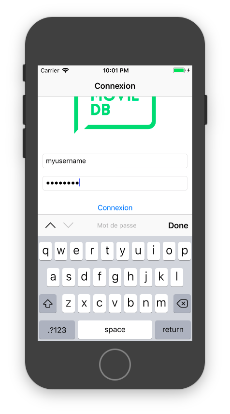

Connexion et compte utilisateur
Introduction
Voici en général à quoi ressemble le 1er écran d'une application iOS lorsqu'un utilisateur la lance pour la 1ère fois :
L'application demande à l'utilisateur de créer un compte, ou, s'il a déjà un compte, de se connecter.
Dans l'exemple de l'application catalogue de films, vous allez permettre à l'utilisateur de se connecter à son compte, pour pouvoir éditer la liste des films qu'il aimerait voir (sa « Watchlist »).
Pour cela, vous allez :
- créer un formulaire de connexion
- connecter ce formulaire à l'API de themoviedb.org
- persister les informations de connexion, pour que l'utilisateur n'ait pas à rentrer son identifiant et mot de passe à chaque utilisation de l'app
- informer l'utilisateur que l'app est en train d'effectuer la connexion
- informer l'utilisateur que l'identifiant ou le mot de passe ne sont pas corrects, le cas échéant
Notions nécessaires : Formulaire, UITextField, gestion du clavier, Keychain, UserDefaults, authentification, feedback utilisateur et indicateur d'activité, gestion d'erreurs avec UIAlertController
Reprenez le projet Xcode de l'atelier 5, où vous aviez affiché une liste de films et une vue de détail en utilisant l'API de themoviedb.org, ou clonez ce repository qui contient la solution de l'atelier 5 : https://github.com/Formation-iOS/Atelier5_Networking.
1er exercice : création d'un formulaire de connexion
Ce 1er exercice consiste à réaliser la partie interface graphique uniquement. Il s'agit de créer un formulaire comprenant deux champs textes (UITextField), un pour l'identifiant et un pour le mot de passe, ainsi qu'un bouton « Connexion ».
Pour implémenter ce formulaire, vous allez utiliser un UITableViewController avec des cellules statiques. L'intérêt d'utiliser un UITableViewController est qu'il va s'occuper de la gestion du clavier pour vous, ce qui n'est pas le cas dans un UIViewController (Gestion du clavier sans UITableViewController).
Lorsque le champ texte de l'identifiant est sélectionné, le clavier doit comporter un bouton « Next », comme dans la capture d'écran ci-dessous. Lorsque l'utilisateur clique sur le bouton « Next », le champ du mot de passe obtient le focus. Si l'utilisateur « scroll » vers le bas, les différents éléments de l'écran doivent s'afficher correctement, en particulier le bouton « Connexion ».
Lorsque le champ texte du mot de passe est sélectionné, le clavier doit comporter un bouton « Done ». Lorsque l'utilisateur clique sur le bouton « Done », la validation de l'identifiant et du mot de passe est réalisée via un appel à l'API de themoviedb.org. Le champ texte du mot de passe doit cacher le mot de passe, comme dans la capture d'écran ci-dessous.

Indication : vous allez avoir besoin des méthodes becomeFirstResponder et resignFirstResponder du UITextField, ainsi que de son delegate.
Validez que tout fonctionne correctement en lançant l'application dans le simulateur de l'iPhone SE.
2ème exercice : connexion à l'API de login et persistence de la session
Rappel sur les closures
Vous allez implémenter une fonction "login" :
static func login(username: String, password: String, result: @escaping (Error?) -> Void) {
...
}
Vous appellerez ensuite cette fonction "login" dans votre view controller.
Note : cette fonction login prend en paramètre une closure, appellée « result ». Si vous utilisez l'auto-complétion dans Xcode, celui-ci génèrera le code ci-dessous pour appeller cette fonction login. Cette syntaxe s'appelle « trailing closure », et c'est un « syntactic sugar » de Swift. On peut avoir l'impression que la closure n'est plus un argument de la fonction, mais c'est bien toujours le cas.
APIRequestManager.login(username: email, password: password) { (error) in
...
}
API de login
La connexion à l'API de themoviedb.org est une succession de 3 requêtes GET. Il va falloir enchaîner ces 3 requêtes avec des appels à Alamofire. A la fin, on obtient un « session_id », qui pourra être utilisé dans la requête qui permet d'ajouter un film à la « Watchlist ».
Note : utilisez URLComponents et URLQueryItem pour créer une URL avec une « query string ». Ceci permet de gérer correctement l'URL encoding.
Requête de création d'un token
https://api.themoviedb.org/3/authentication/token/new?api_key=b692eafd258dae823a2d9ed21dbcdeb5
{
"expires_at": "2017-10-23 13:45:51 UTC",
"request_token": "0181728ec1420301aacecd132ac99d845ac3efaa",
"success": true
}
Requête de validation du token
https://api.themoviedb.org/3/authentication/token/validate_with_login?api_key=b692eafd258dae823a2d9ed21dbcdeb5&username=myusername&password=mypassword&request_token=0181728ec1420301aacecd132ac99d845ac3efaa
{
"success": true,
"request_token": "0181728ec1420301aacecd132ac99d845ac3efaa"
}
Requête de création d'une session
https://api.themoviedb.org/3/authentication/session/new?api_key=b692eafd258dae823a2d9ed21dbcdeb5&request_token=0181728ec1420301aacecd132ac99d845ac3efaa
{
"success": true,
"session_id": "56e8124c66793653f5abcda02675423ceb3205d9"
}
Keychain
En cas de succès, c'est à dire lorsque l'app récupère un « session_id », vous pouvez sauvegarder l'identifiant et le mot de passe de l'utilisateur, ainsi que le « session_id ». Ces informations doivent être persistées dans un endroit sécurisé : pour cela, vous allez utiliser la Keychain.
La Keychain est une base de données cryptée, fournie par iOS. C'est dans cette base de données qu'il faut stocker les secrets tels que les mots de passe, ou les tokens d'authentification qui permettent d'accéder à un service au nom d'un utilisateur.
Dans le cadre de l'application catalogue de films, vous pouvez utiliser le pod KeychainSwift pour sauvegarder et récupérer le mot de passe, ainsi que le session_id de l'utilisateur.
Si vous voulez en savoir plus, vous pouvez lire la documentation d'Apple sur la Keychain.
3ème exercice : feedback utilisateur, gestion des cas d'erreurs
Dans cette partie, vous allez ajouter 2 types de feedback pour l'utilisateur :
- un indicateur d'activité pendant que l'application essaye de se connecter à themoviedb.org
- un message d'erreur dans une alerte, quand l'utilisateur entre un identifiant ou un mot de passe incorrect
Indicateur d'activité
Pendant que la requête est en train de se faire en tâche de fond, l'utilisateur n'a aucun feedback. Ce serait encore plus flagrant si le réseau était lent. Pour que l'expérience utilisateur soit bonne, il est important de l'informer du fait que l'app est en train de réaliser la connexion.
Pour cela, on peut utiliser le pod « MBProgressHUD » de la manière suivante :
let hud = MBProgressHUD.showAdded(to: view, animated: true)
hud.label.text = "Connexion en cours..."
...
hud.hide(animated: true)
Note : il existe un outil pour simuler un réseau lent sur macOS : le Network Link Conditioner. Ce dernier peut être installé via le package « Additional Tools for Xcode », disponible sur le Developer portal d'Apple.
Le Network Link Conditioner est également disponible sur iPhone dans l'app Réglages, dans la section « Développeur ». C'est un outil très utile. Il n'est pas rare que les utilisateurs des applications iOS n'aient pas des conditions idéales de réseau (pas comme les développeurs) ! Il est donc important de tester une app en conditions réelles, et c'est justement à ça que sert le Network Link Conditioner.
Affichage des erreurs avec UIAlertController
Lorsque l'utilisateur entre un identifiant ou un mot de passe incorrects, il faut lui afficher un message d'erreur. Pour cela, nous allons utiliser un UIAlertController.
let alertController = UIAlertController(title: "Titre", message: "Message", preferredStyle: .alert)
let okAction = UIAlertAction(title: "OK", style: .default)
alertController.addAction(okAction)
present(alertController, animated: true, completion:nil)
4ème exercice (optionel) : implémenter l'ajout à la « Watchlist »
Si vous avez le temps, vous pouvez implémenter l'ajout d'un film à la « Watchlist ». Voici la requête à effectuer : https://developers.themoviedb.org/3/account/add-to-watchlist.
Avancé
Connection avec Facebook
De nombreuses applications permettent à l'utilisateur de se connecter via leur compte Facebook, dans le cadre d'une authentification OAuth2. Si vous voulez en savoir, vous pouvez lire la documentation Facebook sur le sujet.
Gestion du clavier en dehors d'un UITableViewController
Comme mentionné plus haut, la gestion du clavier sans UITableViewController nécessite d'écrire du code spécifique pour répondre à l'apparition et à la disparition du clavier, comme décrit dans la documentation d'Apple. Écrire du code pour gérer le clavier n'est pas trivial, et même l'exemple d'Apple ne gère pas correctement certains détails. Il existe également des pods qui gèrent le clavier, comme par exemple IQKeyboardManager.
Autre pod pour le feedback utilisateur
SwiftMessage est un pod qui permet d'afficher des messages à l'utilisateur, de manière moins intrusive et plus flexible que UIAlertController.